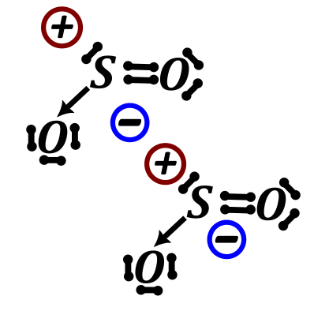
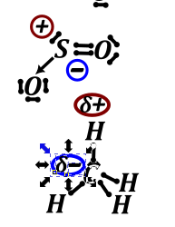
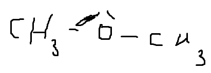
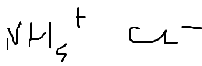

Ogólnie wiązanie wodorowe to jest przykład słabego oddziaływania międzyatomowego, tzn. oddziaływania słabszego niż wiązanie kowalencyjne. Istnieją również inne słabe oddziaływania, one zwykle są jeszcze słabsze niż wiązania wodorowe. Wśród innych słabych oddziaływań możemy wymienić:
- halogen – pi czyli atom halogenu oddziaływają z elektronami pi, wiązanie bardzo nietypowe
- oddziaływania typu dipol –dipol czyli dwa związki obdarzone momentem dipolowym ustawiają się tak, aby biegun dodatni jednej cząsteczki był położony przy biegunie ujemnym drugiej cząsteczki;

- oddziaływania dipol – dipol indukowany – jedna cząsteczka obdarzona ładunkiem dipolowym indukuje ładunek w drugiej niespolaryzowanej cząsteczce powodując sklejenie się tych dwóch fragmentów. Oddziaływania te zwane inaczej są oddziaływaniami van der Wallsa

Oddziaływania dipol indukowany – dipol indukowany – oddziaływania pomiędzy utworzonymi biegunami elektrycznymi na dwóch cząsteczkach
Pi stacking czyli sklejanie się pierścieni aromatycznych w kanapki, o czym dalej w chemii organicznej.
Wiązanie wodorowe.
Wiązanie wodorowe jest słabym oddziaływaniem polegającym na tym, że dodatnio naładowany wodór penetruje wolną parą silnie elektroujemnego atomu, takiego jak azot, tlen lub fluor. W związku z definicją, aby utworzyło się wiązanie wodorowe musimy mieć wodór obdarzony ładunkiem dodatnim, a więc połączony z jakimś bardziej elektroujemnym atomem. Im kwaśniejszy wodór, im większy jego ładunek cząstkowy dodatni, im bardziej spolaryzowane wiązanie tego wodoru to tym silniejsze wiązanie wodorowe tworzy dany wodór. Drugim czynnikiem jest obecność wolnej pary elektronowej na silnie elektroujemnym atomie (w praktyce jednym z \(N,\ O,F\)), im bardziej elektroujemny atom ,tym silniejsze jest utworzone wiązanie wodorowe.
Konsekwencją występowania wiązania wodorowego jest silniejsze oddziaływanie między atomami, które tworzą to wiązania. Występowanie wiązania pomiędzy atomami dwóch tych samych cząsteczek powoduje podwyższenie temperatury wrzenia dla tej substancji ponad oczekiwaną wartość. Bardzo interesujące jest porównanie temperatur wrzenia trzech amin o tym samym wzorze: \(C_{3}H_{9}N\)
Jak widać dla wzoru pierwszego mamy dwa wodory dołączone do
Wiązanie wodorowe utworzone między cząsteczkami tego samego związku (międzycząsteczkowe) powoduje, że cząsteczki się lepiej trzymają siebie ->
Obecność wiązania wodorowego miedzy cząsteczkami tego samego związku ⬄ podwyższenie temperatury wrzenia.
Oba warunki muszą być spełnione, żeby było podwyższenie temperatury wrzenia.

czylli tutaj nie mam wiązań wodorowych gdyż nie ma kwaśnych wodorów.
tutaj nie ma wiązań wodorowych bo nie ma wolnych par na \(N,\ O,\ F\)I to jest najczęstsza opcja na maturze tzn. Nienaturalne (nie wynikające z masy molowej i rozgałęzienia) podwyższenie temp wrzenie = międzycząsteczkowe wiązanie wodorowe. I w drugą stronę tak samo. Kwasy karboksylowe w fazie gazowej wystepuja jako dimery powiązane przez wiązania wodorowe.
Jest to motyw wykorzystywany skrajnie często na maturze, wręcz tak często, że jeżeli nie widzisz wiązania wodorowego, a masz podwyższenie tmp. Wrzenia. To możesz praktycznie pisać na ślepo że to wiązanie tam jest.
Wiązanie wodorowe może być również wewnątrz cząsteczki (to się spotyka dla związków organicznych)= raczej tutaj nie ma podwyższenia temperatury wrzenia, ale jest usztywnienie cząsteczki = dużo bardziej preferowana jest opcja w której to wiązanie wodorowe jest niż go nie ma, czasem powoduje to nawet stabilizacje jakiejś nieoczywistej struktury
Natomiast tej opcji na maturze nigdy nie było.
Układy w których mamy więcej niż jeden związek, to wystarczy żeby było wiązania wodorowe że jeden związek ma spełniony jeden warunek, a drugi drugi warunek – związki które rzeczywiście tak mają to się bardziej lubią (bo mogą sobie robić wiazania wodorowe)= lepiej się kleją = lepiej się rozpuszczają. W praktyce jak pomieszam \(CH_{3}OCH_{3}\) i \(NH_{4}^{+}Cl^{-}\) to wiazania wodorowe będę między wodorem przy azocie i tlenem na \(CH_{3}OCH_{3}\)(eterze)
Związki, które mogą robić wiązania wodorowe lepiej rozpuszczają się w \(H_{2}O\), ogólnie w rozpusczalnikach, które mogą tworzyć wiązania wodorowe
Jeżeli masz taki układ to raczej rozpuszczalnika masz nadmiar i jego wiązania wodorowe rozpuszczalnik – związek wygrywają masą z wiązaniami wodoroweymi zwiazek –związek.
Jak mamy roztwór kwasu octowego w wodzie to praktycznie nie mamy wiązań wodorowych kwas octowy – kwas octowy, bo on woli utworzyć z wodą bo jej jest więcej
Roztwór kwasu octowego w\(\ CCl_{4}\) (niepolarny, bez kwaśnych wodorów) to kwas octowy wiązania wodorowe będzie robił (tylko) z drugą cząsteczką kwasu octowego, bo nie ma inne partnera.
Natomiast ogólne warunki na temperaturę wrzenia.
- im większa masa molowa cząsteczki tym temperatura wrzenia większa bo gorzej odparować tę cząstęczkę.
- jeżeli ta sama masa molowa to patrzysz na rozgałęzienia, im więcej rozgałęzień tym łątwiej odparować cząsteczkę (im bardzie przypomina kulkę tym jest bardziej lotna).
- ewentualny czarny koń, czyli tym tłumaczymy ewentualne wyjątki: WIĄZANIE WODOROWE I inne słabe oddziaływania.